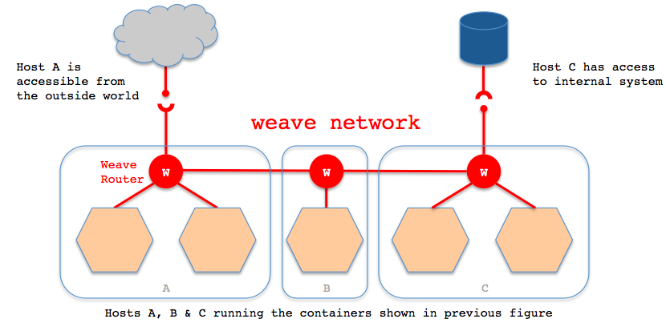

Docker网络非常值得学习。对Docker不熟的同学，建议先看一些入门资料。
Docker 学习资料
- Docker — 从入门到实践 https://www.yuque.com/grasilife/docker
- Docker Kubernetes Lab Handbook https://docker-k8s-lab.readthedocs.io/en/latest/index.html
- 「Docker进阶与实战」华为Docker实践小组
单机网络
（建议在Linux系统上实验。）
Docker安装完后，默认有三个（三种）网络。分别是默认的bridge模式，host模式，none模式。
# docker network ls
NETWORK ID NAME DRIVER SCOPE
51cbe7a9bb19 bridge bridge local
7182ef9fa8c4 host host local
bd80d0dedaa8 none null local
参考：https://docs.docker.com/network/
none模式 –net=none
无网络。
# docker run --net=none --rm -it alpine ip addr show
1: lo: <LOOPBACK,UP,LOWER_UP> mtu 65536 qdisc noqueue state UNKNOWN qlen 1000
link/loopback 00:00:00:00:00:00 brd 00:00:00:00:00:00
inet 127.0.0.1/8 scope host lo
valid_lft forever preferred_lft forever
host模式 –net=host
- 容器共用宿主机的网络。但是，容器的其他方面，如文件系统、进程列表等还是和宿主机隔离的。
- 容器不会申请独立的IP。
- 容器申请的端口占用宿主机的端口资源。
- -p等端口映射命令不起作用：WARNING: Published ports are discarded when using host network mode
- 性能上比较好，因为没有地址转换。Host mode networking can be useful to optimize performance, and in situations where a container needs to handle a large range of ports, as it does not require network address translation (NAT), and no “userland-proxy” is created for each port.
- Linux ONLY。The host networking driver only works on Linux hosts, and is not supported on Docker Desktop for Mac, Docker Desktop for Windows, or Docker EE for Windows Server.
参考
- https://docs.docker.com/network/host/
- Networking using the host network https://docs.docker.com/network/network-tutorial-host/
实验
# docker run --net=host --rm -it alpine ip addr show
1: lo: <LOOPBACK,UP,LOWER_UP> mtu 65536 qdisc noqueue state UNKNOWN qlen 1000
link/loopback 00:00:00:00:00:00 brd 00:00:00:00:00:00
inet 127.0.0.1/8 scope host lo
valid_lft forever preferred_lft forever
inet6 ::1/128 scope host
valid_lft forever preferred_lft forever
2: eno1: <BROADCAST,MULTICAST,UP,LOWER_UP> mtu 1500 qdisc fq_codel state UP qlen 1000
link/ether 10:7b:44:b0:b1:37 brd ff:ff:ff:ff:ff:ff
inet 192.168.0.106/24 brd 192.168.0.255 scope global dynamic eno1
valid_lft 6663sec preferred_lft 6663sec
inet6 fe80::e0c5:55dc:fba0:549b/64 scope link
valid_lft forever preferred_lft forever
5: docker0: <NO-CARRIER,BROADCAST,MULTICAST,UP> mtu 1500 qdisc noqueue state DOWN
link/ether 02:42:8c:6e:08:4d brd ff:ff:ff:ff:ff:ff
inet 172.17.0.1/16 brd 172.17.255.255 scope global docker0
valid_lft forever preferred_lft forever
inet6 fe80::42:8cff:fe6e:84d/64 scope link
valid_lft forever preferred_lft forever
# ip addr show
1: lo: <LOOPBACK,UP,LOWER_UP> mtu 65536 qdisc noqueue state UNKNOWN group default qlen 1000
link/loopback 00:00:00:00:00:00 brd 00:00:00:00:00:00
inet 127.0.0.1/8 scope host lo
valid_lft forever preferred_lft forever
inet6 ::1/128 scope host
valid_lft forever preferred_lft forever
2: eno1: <BROADCAST,MULTICAST,UP,LOWER_UP> mtu 1500 qdisc fq_codel state UP group default qlen 1000
link/ether 10:7b:44:b0:b1:37 brd ff:ff:ff:ff:ff:ff
inet 192.168.0.106/24 brd 192.168.0.255 scope global dynamic noprefixroute eno1
valid_lft 6619sec preferred_lft 6619sec
inet6 fe80::e0c5:55dc:fba0:549b/64 scope link noprefixroute
valid_lft forever preferred_lft forever
5: docker0: <NO-CARRIER,BROADCAST,MULTICAST,UP> mtu 1500 qdisc noqueue state DOWN group default
link/ether 02:42:8c:6e:08:4d brd ff:ff:ff:ff:ff:ff
inet 172.17.0.1/16 brd 172.17.255.255 scope global docker0
valid_lft forever preferred_lft forever
inet6 fe80::42:8cff:fe6e:84d/64 scope link
valid_lft forever preferred_lft forever
容器只是隔离除了网络之外的资源。因为使用了宿主机的网络，所以容器进程可以与其他主机进程互相通信。需要注意的是端口冲突的问题，以及安全的问题（共用了宿主机的资源）。
bridge模式 –net={name_it_youself}
- Docker默认的网络模式。不加–net参数，就默认采用这种网络模式。
- 一个独立的虚拟网络。
- 宿主机网络对容器网络是无感知的，需要让容器的进程端口映射到宿主机的端口上，同样，映射需要注意端口冲突的问题。
- 每个Container都有一个独立的IP。
docker network inspect bridge可查看。 - 同一个虚拟网络下的容器可以互相通信。
- 容器可与宿主机通信。
- 容器可通过宿主机与其他网络通信。只要宿主机能到，容器就能到。有点像是VMWare中的NAT模式。同样叫bridge，VMWare的bridge模式跟Docker bridge完全不同。
- 创建一个新的bridge，就是创建了一个新的子网。
docker network create -d bridge my_bridge - 桥接网络只对一个Docker daemon host上的容器管用，多机就不行了，docker-compose也只能在单机上跑，生产没法用。Bridge networks apply to containers running on the same Docker daemon host. For communication among containers running on different Docker daemon hosts, you can either manage routing at the OS level, or you can use an overlay network.
- 建议使用自定义的bridge网络。
- 最实用的，自定义网络可以通过容器名称而不是IP与其他容器通信，而默认网络只能通过IP。User-defined bridges provide automatic DNS resolution between containers.
- User-defined bridges provide better isolation.
- Containers can be attached and detached from user-defined networks on the fly.
- 网络拓扑如下。

参考
- https://docs.docker.com/network/bridge/
- Networking with standalone containers https://docs.docker.com/network/network-tutorial-standalone/
实验
TODO
容器模式 –net=container:base_container
共用其他容器的网络栈，其他资源容器隔离。这个在Service Mesh的场景下非常有用。
实验
# docker run -it --name=base_container alpine /bin/ash
/ # ip addr show
1: lo: <LOOPBACK,UP,LOWER_UP> mtu 65536 qdisc noqueue state UNKNOWN qlen 1000
link/loopback 00:00:00:00:00:00 brd 00:00:00:00:00:00
inet 127.0.0.1/8 scope host lo
valid_lft forever preferred_lft forever
8: eth0@if9: <BROADCAST,MULTICAST,UP,LOWER_UP,M-DOWN> mtu 1500 qdisc noqueue state UP
link/ether 02:42:ac:11:00:02 brd ff:ff:ff:ff:ff:ff
inet 172.17.0.2/16 brd 172.17.255.255 scope global eth0
valid_lft forever preferred_lft forever
# docker run --net=container:base_container --rm -it alpine ip addr show
1: lo: <LOOPBACK,UP,LOWER_UP> mtu 65536 qdisc noqueue state UNKNOWN qlen 1000
link/loopback 00:00:00:00:00:00 brd 00:00:00:00:00:00
inet 127.0.0.1/8 scope host lo
valid_lft forever preferred_lft forever
8: eth0@if9: <BROADCAST,MULTICAST,UP,LOWER_UP,M-DOWN> mtu 1500 qdisc noqueue state UP
link/ether 02:42:ac:11:00:02 brd ff:ff:ff:ff:ff:ff
inet 172.17.0.2/16 brd 172.17.255.255 scope global eth0
valid_lft forever preferred_lft forever
跨主机网络
github上搜索有关Container networking的项目。
Docker Overlay
官方提供的方案。之前是需要etcd辅助的。Docker Engine 1.12 integrated the control plane state into Docker Engine so that an external store is no longer required.
Weave
Weave Net creates a virtual network that connects Docker containers across multiple hosts and enables their automatic discovery. 参考：https://www.weave.works/docs/net/latest/overview/
原理是所有容器都连入一个虚拟网络 weave network，所有加入这个网络的容器都有一块weave网卡。要求每台宿主机启动weave。

实验
实验参考：https://www.weave.works/docs/net/latest/install/using-weave/
Docker可以通过插件形式来集成其他网络驱动。看说明weave说明，这种只适合Swarm模式。所以我们实验不采用这种方式。Before using the plugin, please keep in mind the plugin works only in Swarm mode and requires Docker version 1.13 or later. https://www.weave.works/docs/net/latest/install/plugin/plugin-v2/
虚拟机环境搭建，创建两台虚拟机。注意在同一个网络下。参考：https://www.vagrantup.com/docs/networking/private_network.html
vagrant init centos/7
（快速）安装Docker。参考：https://www.yuque.com/grasilife/docker/install-centos#ccbf609c
# curl -fsSL get.docker.com -o get-docker.sh
# sh get-docker.sh --mirror Aliyun
# systemctl enable docker
# systemctl start docker
安装weave。参考：https://www.weave.works/docs/net/latest/install/installing-weave/
# curl -L git.io/weave -o /usr/bin/weave
# chmod a+x /usr/bin/weave
weave网络启动，网络的分配将有weave来处理。eval $(weave env) 覆盖了 DOCKER_HOST 为 unix:///var/run/weave/weave.sock。相当于劫持了docker客户端与docker daemon的通信。参考：https://www.youtube.com/watch?v=kihQCCT1ykE&feature=youtu.be
[root@host2 vagrant]# weave launch
[root@host2 vagrant]# eval $(weave env)
# join host2
[root@host1 vagrant]# weave launch $host2
[root@host1 vagrant]# eval $(weave env)
连通测试。
# start tcp server on container in host2
[root@host2 vagrant]# docker run --name hello busybox nc -lp 8888
# ping from container in host1 to container in host2
[root@host1 vagrant]# docker run --rm -it busybox ping hello
PING hello (10.32.0.1): 56 data bytes
64 bytes from 10.32.0.1: seq=0 ttl=64 time=3.936 ms
64 bytes from 10.32.0.1: seq=1 ttl=64 time=0.616 ms
# tcp test from container in host1 to container in host2
[root@host1 vagrant]# docker run --rm -it busybox sh
/ # echo "hello world!" | nc hello 8888
查看容器网卡，能看到ethwe网卡，与weave有关。
[root@host2 vagrant]# docker run --rm busybox ip addr
1: lo: <LOOPBACK,UP,LOWER_UP> mtu 65536 qdisc noqueue qlen 1000
link/loopback 00:00:00:00:00:00 brd 00:00:00:00:00:00
inet 127.0.0.1/8 scope host lo
valid_lft forever preferred_lft forever
41: eth0@if42: <BROADCAST,MULTICAST,UP,LOWER_UP,M-DOWN> mtu 1500 qdisc noqueue
link/ether 02:42:ac:11:00:02 brd ff:ff:ff:ff:ff:ff
inet 172.17.0.2/16 brd 172.17.255.255 scope global eth0
valid_lft forever preferred_lft forever
43: ethwe@if44: <BROADCAST,MULTICAST,UP,LOWER_UP,M-DOWN> mtu 1376 qdisc noqueue
link/ether ca:97:90:14:18:5e brd ff:ff:ff:ff:ff:ff
inet 10.32.0.2/12 brd 10.47.255.255 scope global ethwe
valid_lft forever preferred_lft forever
[root@host1 vagrant]# docker run --rm busybox ip addr
1: lo: <LOOPBACK,UP,LOWER_UP> mtu 65536 qdisc noqueue qlen 1000
link/loopback 00:00:00:00:00:00 brd 00:00:00:00:00:00
inet 127.0.0.1/8 scope host lo
valid_lft forever preferred_lft forever
29: eth0@if30: <BROADCAST,MULTICAST,UP,LOWER_UP,M-DOWN> mtu 1500 qdisc noqueue
link/ether 02:42:ac:11:00:02 brd ff:ff:ff:ff:ff:ff
inet 172.17.0.2/16 brd 172.17.255.255 scope global eth0
valid_lft forever preferred_lft forever
31: ethwe@if32: <BROADCAST,MULTICAST,UP,LOWER_UP,M-DOWN> mtu 1376 qdisc noqueue
link/ether da:f2:40:0a:1e:d7 brd ff:ff:ff:ff:ff:ff
inet 10.44.0.0/12 brd 10.47.255.255 scope global ethwe
valid_lft forever preferred_lft forever
总结下Weave特点
- 通过劫持Docker client与daemon的方式工作。
- 创建容器的请求被劫持，weave为容器注入了weave网络。
- 不依赖etcd或是consul等kv数据库。
- 集群扩容，增加宿主机，需要将宿主机配置为weave节点。
- 容器部署，根据资源利用率，部署到哪个宿主机节点。没有容器编排工具，比如Kubernetes，还是挺不方便的。
Flannel
Flannel为每个host分配一个subnet，容器从subnet中分配IP，这些IP可以在host间路由，容器间无需使用nat和端口映射即可实现跨主机通信。每个subnet都是从一个更大的IP池中划分的，flannel会在每个主机上运flanneld的agent，负责从池子中分配subnet。
Flannel使用etcd存放网络配置、已分配的subnet、host的IP等信息，Flannel数据包在主机间转发是由backend实现的，目前已经支持UDP、VxLAN、host-gw、AWS VPC和GCE路由等多种backend。https://www.cnblogs.com/itzgr/p/10172004.html

实验
使用docker-machine创建了三台虚拟机。
| 节点 | IP | 说明 |
|---|---|---|
| etcd | 192.168.99.105 | 安装etcd |
| node01 | 192.168.99.108 | 安装docker, flannel |
| node02 | 192.168.99.109 | 安装docker, flannel |
参考：
- Multi-Host Networking Overlay with Flannel https://docker-k8s-lab.readthedocs.io/en/latest/docker/docker-flannel.html
- Running flannel https://github.com/coreos/flannel/blob/master/Documentation/running.md
etcd集群搭建，需要兼容etcd2，因为flannel依赖etcd2。https://github.com/coreos/flannel/issues/1191
配置一个网段，写入etcd。
docker@etcd01:~$ etcd -listen-client-urls="http://0.0.0.0:2379" --advertise-client-urls="http://192.168.99.105:2379" --enable-v2
docker@etcd01:~$ ETCDCTL_API=2 etcdctl set /coreos.com/network/config '{ "Network": "10.5.0.0/16", "Backend": {"Type": "vxlan"}}'
docker@etcd01:~$ ETCDCTL_API=2 etcdctl get /coreos.com/network/config
flanneld会读取etcd配置，并为该主机分配子网段。
root@node01:~# ./flanneld-amd64 -etcd-endpoints="http://192.168.99.105:2379" -iface=192.168.99.108
root@node02:~# ./flanneld-amd64 -etcd-endpoints="http://192.168.99.105:2379" -iface=192.168.99.109
可以看到，主机上有了新网卡，子网段也会写入etcd。
docker@etcd01:~$ ETCDCTL_API=2 etcdctl ls /coreos.com/network/subnets
/coreos.com/network/subnets/10.5.94.0-24
/coreos.com/network/subnets/10.5.90.0-24
配置docker daemon参数，boot2docker linux配置如下：参考 https://github.com/boot2docker/boot2docker/issues/508。
node01重新配置docker daemon：
root@node01:~# /etc/init.d/docker stop
Stopping dockerd (5350)
root@node01:~# source /run/flannel/subnet.env
root@node01:~# echo EXTRA_ARGS=\"--bip=${FLANNEL_SUBNET} --mtu=${FLANNEL_MTU}\" >> /var/lib/boot2docker/profile
root@node01:~# cat /var/lib/boot2docker/profile
EXTRA_ARGS='
--label provider=virtualbox
'
CACERT=/var/lib/boot2docker/ca.pem
DOCKER_HOST='-H tcp://0.0.0.0:2376'
DOCKER_STORAGE=overlay2
DOCKER_TLS=auto
SERVERKEY=/var/lib/boot2docker/server-key.pem
SERVERCERT=/var/lib/boot2docker/server.pem
EXTRA_ARGS="--bip=10.5.94.1/24 --mtu=1450"
root@node01:~# /etc/init.d/docker start
Starting dockerd
node02重新配置docker daemon：
root@node02:~# /etc/init.d/docker stop
Stopping dockerd (2624)
root@node02:~# source /run/flannel/subnet.env
root@node02:~# echo EXTRA_ARGS=\"--bip=${FLANNEL_SUBNET} --mtu=${FLANNEL_MTU}\" >> /var/lib/boot2docker/profile
root@node02:~# cat /var/lib/boot2docker/profile
EXTRA_ARGS='
--label provider=virtualbox
'
CACERT=/var/lib/boot2docker/ca.pem
DOCKER_HOST='-H tcp://0.0.0.0:2376'
DOCKER_STORAGE=overlay2
DOCKER_TLS=auto
SERVERKEY=/var/lib/boot2docker/server-key.pem
SERVERCERT=/var/lib/boot2docker/server.pem
EXTRA_ARGS="--bip=10.5.90.1/24 --mtu=1450"
root@node02:~# /etc/init.d/docker start
Starting dockerd
连通测试：
root@node01:~# docker run -it busybox
/ # ip a
1: lo: <LOOPBACK,UP,LOWER_UP> mtu 65536 qdisc noqueue qlen 1000
link/loopback 00:00:00:00:00:00 brd 00:00:00:00:00:00
inet 127.0.0.1/8 scope host lo
valid_lft forever preferred_lft forever
2: sit0@NONE: <NOARP> mtu 1480 qdisc noop qlen 1000
link/sit 0.0.0.0 brd 0.0.0.0
10: eth0@if11: <BROADCAST,MULTICAST,UP,LOWER_UP,M-DOWN> mtu 1450 qdisc noqueue
link/ether 02:42:0a:05:5e:02 brd ff:ff:ff:ff:ff:ff
inet 10.5.94.2/24 brd 10.5.94.255 scope global eth0
valid_lft forever preferred_lft forever
/ # nc -lp 8888
root@node02:~# docker run -it busybox
/ # ip a
1: lo: <LOOPBACK,UP,LOWER_UP> mtu 65536 qdisc noqueue qlen 1000
link/loopback 00:00:00:00:00:00 brd 00:00:00:00:00:00
inet 127.0.0.1/8 scope host lo
valid_lft forever preferred_lft forever
2: sit0@NONE: <NOARP> mtu 1480 qdisc noop qlen 1000
link/sit 0.0.0.0 brd 0.0.0.0
10: eth0@if11: <BROADCAST,MULTICAST,UP,LOWER_UP,M-DOWN> mtu 1450 qdisc noqueue
link/ether 02:42:0a:05:5a:02 brd ff:ff:ff:ff:ff:ff
inet 10.5.90.2/24 brd 10.5.90.255 scope global eth0
valid_lft forever preferred_lft forever
/ # echo "hello world!" | nc 10.5.94.2 8888
总结Flannel特点
- 依赖etcd2，在Kubernetes环境里依赖Kubernetes API（封装etcd）。存储网段与路由表？
- 不侵入docker容器。这是比weave优雅的地方。
- 整体思路，先划分一个大的网段，为每台加入的主机从大的网段里分配小的网段，为docker容器从小网段里分配IP。
Last modified on 2020-03-21